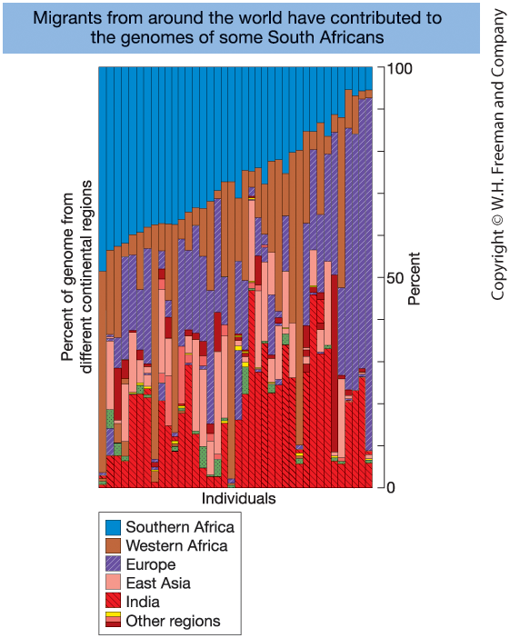
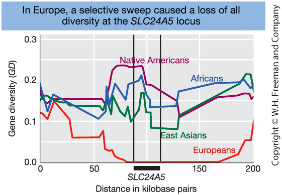

Introduction to Population Genetics
Chapter 18 - Introduction to Genetic Analysis (12th ed.)
Center for Quantitative Genetics and Genomics
Aarhus University
2026-03-15
Why Study Population Genetics?
- Assess genetic disease risk
- Evaluate how breeding practices affect genetic diversity
- Understand risks of inbreeding in small or fragmented populations
- Explore relationships among human populations
- Study genomic adaptation to different environments
- Explain how populations and species evolve
What Is Population Genetics?
Population genetics explains how evolutionary processes shape patterns of genetic variation and their consequences.
Patterns
- DNA variation
- Allele frequencies
- Linkage disequilibrium
- Population differences
→
Processes
- Mutation
- Migration
- Recombination
- Genetic drift
- Natural selection
→
Consequences
- Adaptation
- Disease risk
- Population history
- Conservation genetics
Population Genetics
What Is a Population?
- Individuals of the same species
- An interbreeding group
- A defined sampling unit
A population is defined by gene exchange and a shared contribution to future generations.
What Is Population Genetics?
- Study of genetic variation within populations
- Study of changes in allele frequencies over time
Driven by evolutionary forces:
- Mutation
- Migration (gene flow)
- Recombination
- Genetic drift
- Natural selection
- Mating systems
Focus: how evolutionary forces shape allele frequencies across generations.
Learning Goals — Population Genetics
1. Detecting Genetic Variation
- Identify major types of DNA variation
- Explain locus, allele, haplotype, and phase
2. Gene Pool & Hardy–Weinberg
- Define the gene pool and calculate allele and genotype frequencies
- State the Hardy–Weinberg law and its assumptions
- Test for equilibrium and explain causes of deviation
3. Mating Systems & Inbreeding
- Distinguish mating systems
- Explain effects of nonrandom mating on genotype frequencies
- Define inbreeding and describe its genetic consequences
4. Measurement of Genetic Variation
- Understand and interpret common statistics used to quantify genetic variation in populations
5. Evolutionary Forces
- Describe how mutation, migration, recombination, drift, and selection change allele frequencies
- Explain population size effects and genetic drift
- Distinguish major forms of selection
- Explain linkage disequilibrium and its decay
1. Detecting Genetic Variation
DNA Variation in Populations
DNA variation occurs at specific genomic locations
- A locus = a position in the genome
- A single nucleotide
- Or a longer DNA region
- A single nucleotide
Humans are diploid
→ two alleles at each autosomal locus
At a locus, individuals may carry different alleles.
Major types of genetic variation
- Single nucleotide polymorphisms (SNPs)
- Small insertions/deletions (indels)
- Repeat-length variants (microsatellites / STRs)
- Structural variants (CNVs, inversions)
SNPs
- Single base substitution (A, C, G, or T)
- Most abundant variant type
- Usually biallelic
- Relatively low mutation rate
Microsatellites (STRs)
- Short motifs (2–6 bp) repeated in tandem
- Alleles differ in repeat number
- Often highly polymorphic
- Higher mutation rate
SNPs → abundant and relatively stable
Microsatellites → highly variable
Visualizing Genetic Variation

Figure 18-1. Aligned DNA sequences from seven chromosomes. Asterisks indicate SNPs. Indels and a microsatellite region are also shown.
From DNA to Genotype Data
Genomic technologies allow measurement of variation at thousands to millions of loci.
Marker-based genotyping
- Assay predefined variants
(SNP arrays, STR panels)
- Efficient for large sample sizes
Sequencing-based approaches
- Discover and genotype variants simultaneously
- Provide more comprehensive genomic information
Large genotype datasets across many loci form the foundation of population genetic analysis.

Figure 18-2. Microarray for SNP genotyping
- Each dot = one SNP
- Red/green = homozygous
- Yellow = heterozygous
The Genotype Matrix
After genotyping, data are organized into an n × m matrix.
- n = number of individuals (rows)
- m = number of loci (columns)
- Each cell = genotype at one locus for one individual
Common SNP Coding (biallelic loci)
| Code | Genotype |
|---|---|
| 0 | Homozygous reference |
| 1 | Heterozygous |
| 2 | Homozygous alternative |
| SNP₁ | SNP₂ | SNP₃ | … | |
|---|---|---|---|---|
| Ind₁ | 0 | 1 | 2 | |
| Ind₂ | 1 | 1 | 0 | |
| Ind₃ | 2 | 0 | 1 | |
| … |
Biological data → Numerical matrix → Statistical analysis
Linked Loci, Haplotypes, and Phase
Loci are arranged along chromosomes.
- Physically close loci recombine less frequently
- Nearby alleles tend to be inherited together
These allele combinations on a single chromosome are called haplotypes.
Definition:
A haplotype = a set of alleles at multiple loci
located on the same chromosome copy.
Example: Two linked loci
- Locus 1: A / a
- Locus 2: B / b
Possible haplotypes: AB, Ab, aB, ab
Phase
- Genotype: alleles present at loci (unphased)
- Haplotype: alleles on one chromosome (phased)
The same genotype can correspond to different phases.
Inheritance of Haplotypes
Mother
Haplotype 1: A ─── B
Haplotype 2: a ─── b
Father
Haplotype 1: A ─── b
Haplotype 2: a ─── B
Case 1: No Crossover Between A and B
Transmitted haplotypes remain intact.
Example offspring:
A ─── B
a ─── B
Haplotypes: A B / a B
Genotype: A a B B
Case 2: Crossover Between A and B
Recombination creates new haplotypes.
Example recombinant haplotypes:
A ─── b
a ─── B
New allele combinations become possible.
Visualizing Haplotypes and Their Relationships

Figure 18-4.
(a) Six haplotypes (A–F) from aligned DNA sequences.
(b) Haplotype network showing mutational relationships.
- Circles = haplotypes
- Branches = mutations
Haplotype Network for Human mtDNA

Figure 18-6 Human mitochondrial DNA haplotype network mapped globally.
- The ancestral L haplogroup appears in Africa
- Derived haplogroups spread worldwide
- Supports the Out of Africa model
2. Gene Pool Concept and Hardy–Weinberg
The Gene Pool Concept

Figure 18-7. A Frog Gene Pool
Gene pool = total collection of alleles
in a population at a given time.
Population size: N = 16 (diploid)
Total alleles at one locus: 2N = 32
Genotype counts:
- 5 AA
- 8 Aa
- 3 aa
Allele counts:
- 18 A
- 14 a
Genotype Frequencies
Definition
Genotype frequency = proportion of individuals
with a given genotype.
For a diploid locus with alleles A and a:
\[ f(AA) = \frac{\#AA}{N} \]
\[ f(Aa) = \frac{\#Aa}{N} \]
\[ f(aa) = \frac{\#aa}{N} \]
Genotype frequencies sum to 1:
\[ f(AA) + f(Aa) + f(aa) = 1 \]
Example (N = 16 frogs)
Counts:
- 5 AA
- 8 Aa
- 3 aa
Frequencies:
\[ f(AA) = \frac{5}{16} = 0.31 \]
\[ f(Aa) = \frac{8}{16} = 0.50 \]
\[ f(aa) = \frac{3}{16} = 0.19 \]
Check: \[ 0.31 + 0.50 + 0.19 = 1 \]
Allele Frequencies
Definition
Instead of counting genotypes, we count alleles.
For a diploid population:
\[ \text{Total alleles} = 2N \]
Let:
- \(p\) = frequency of allele A
- \(q\) = frequency of allele a
Then:
\[ p = \frac{\#A}{2N} \qquad q = \frac{\#a}{2N} \]
Allele frequencies sum to 1:
\[ p + q = 1 \]
Example (N = 16 frogs)
Total alleles:
\[ 2N = 2 \times 16 = 32 \]
Allele counts:
- 18 A
- 14 a
Frequencies:
\[ p = \frac{18}{32} = 0.56 \]
\[ q = \frac{14}{32} = 0.44 \]
Check: \[ 0.56 + 0.44 = 1 \]
From Alleles to Genotypes: Hardy–Weinberg Law
Hardy–Weinberg Law
If mating is random:
\[ f(AA) = p^2 \]
\[ f(Aa) = 2pq \]
\[ f(aa) = q^2 \]
\[ p^2 + 2pq + q^2 = 1 \]
If Hardy–Weinberg assumptions hold, allele frequencies remain constant across generations and the population is in equilibrium.
Why does this work?
Allele frequency = probability of drawing that allele from the gene pool.
Let:
- \(p\) = frequency of allele A
- \(q\) = frequency of allele a
Under random union of gametes:
\[ f(AA) = p \times p = p^2 \]
\[ f(aa) = q \times q = q^2 \]
\[ f(Aa) = p q + q p = 2pq \]
Why Hardy–Weinberg Matters
- Provides a null model for evolution
- Predicts genotype frequencies from allele frequencies
- Allows detection of evolutionary forces
- Defines when a population is in equilibrium
Hardy–Weinberg: Assumptions and Violations
Hardy–Weinberg applies only if:
- Random mating
- No selection
- No mutation
- No migration
- Infinitely large population
These conditions define the null model.
Violations occur when:
- Non-random mating
- Natural selection
- Population structure
- Mutation or migration
- Finite population size (genetic drift)
Deviations from Hardy–Weinberg
indicate evolutionary forces are acting.
From Genotype to Allele Frequencies
Mathematical relationship
At a locus with alleles A and a:
Let genotype frequencies be:
\[ f(AA), \quad f(Aa), \quad f(aa) \]
Then allele frequencies are:
\[ p = f(AA) + \tfrac{1}{2} f(Aa) \]
\[ q = f(aa) + \tfrac{1}{2} f(Aa) \]
\[ p + q = 1 \]
Intuition
Each individual carries two alleles.
- AA contributes two A alleles
- Aa contributes one A and one a
- aa contributes two a alleles
Heterozygotes contribute half to each allele.
Allele frequencies are weighted averages
of genotype frequencies.
Hardy–Weinberg Test: Theory and Example
Hardy–Weinberg Test (Theory Template)
| A/A | A/G | G/G | Sum | |
|---|---|---|---|---|
| Observed number (\(O\)) | \(N_{AA}\) | \(N_{AG}\) | \(N_{GG}\) | \(N\) |
| Observed frequency | \(\dfrac{N_{AA}}{N}\) | \(\dfrac{N_{AG}}{N}\) | \(\dfrac{N_{GG}}{N}\) | \(1\) |
| Expected frequency | \(p^2\) | \(2pq\) | \(q^2\) | \(1\) |
| Expected number (\(E\)) | \(Np^2\) | \(N(2pq)\) | \(Nq^2\) | \(N\) |
| \(\chi^2\) contribution | \(\dfrac{(N_{AA}-E_{AA})^2}{E_{AA}}\) | \(\dfrac{(N_{AG}-E_{AG})^2}{E_{AG}}\) | \(\dfrac{(N_{GG}-E_{GG})^2}{E_{GG}}\) | \(\chi^2\) |
Estimated frequency of allele A
\[ p = \frac{2n_{AA} + n_{AG}}{2N} \]
The frequency of allele G:
\[ q = 1 - p \]
since \(p + q = 1\).
Example: SNP rs9272426 (HLA-DQA1)
| A/A | A/G | G/G | Sum | |
|---|---|---|---|---|
| Observed number | 17 | 55 | 12 | 84 |
| Observed frequency | 0.202 | 0.655 | 0.143 | 1 |
| Expected frequency | 0.281 | 0.498 | 0.221 | 1 |
| Expected number | 23.574 | 41.851 | 18.574 | 84 |
| \(\chi^2\) contribution | 1.833 | 4.131 | 2.327 | 8.29 |
Allele frequency:
\[ p = \frac{2n_{AA}+n_{AG}}{2N} = \frac{2\cdot17 + 55}{2\cdot84} = 0.53, \quad q = 0.47 \] HWE Test:
\[ \chi^2 = 8.29, \quad df = 1, \quad p = 0.004 \] Since \(p < 0.05\), the SNP deviates from Hardy–Weinberg equilibrium.
The Chi-Square Test for Hardy–Weinberg Equilibrium
Computation
We test whether observed genotype counts deviate from Hardy–Weinberg expectations.
For each genotype class:
\[ \chi^2_i = \frac{(O - E)^2}{E} \]
- \(O\) = observed count
- \(E\) = expected count under HWE
Total test statistic:
\[ \chi^2 = \sum \frac{(O - E)^2}{E} \]
Inference
Compare \(\chi^2\) to the chi-square distribution with 1 degree of freedom for a biallelic locus.
If \(\chi^2\) exceeds the critical value → reject HWE.
Significant deviation suggests:
- Non-random mating
- Selection
- Population structure
- Genetic drift
3. Mating Systems and Inbreeding
Random Mating and Hardy–Weinberg
Random mating (HWE assumption)
- Individuals mate independently of genotype
- No genotype-based mate preference
If random mating holds:
- Genotype frequencies follow \(p^2, 2pq, q^2\)
- Allele frequencies remain constant
If mating is not random
Hardy–Weinberg proportions may fail.
Common causes:
- Assortative mating
- Disassortative mating
- Population subdivision
- Inbreeding
Non-random mating primarily alters
genotype frequencies.
Mate Choice and Genotype Frequencies
Positive assortative mating
- Similar individuals mate
- Example: tall × tall
Effect:
- Excess of homozygotes
- Deviation from HWE proportions
- Allele frequencies unchanged (in the absence of other forces)
Negative assortative mating
- Dissimilar individuals mate
- Example: self-incompatibility (S locus) in Brassica
Effect:
- Excess of heterozygotes
- Deviation from HWE proportions
- Allele frequencies unchanged (in the absence of other forces)
Disassortative Mating: The MHC Example
Major Histocompatibility Complex (MHC)
- Central to immune recognition
- Highly polymorphic
- May influence mate choice
Evolutionary consequence
- Preference for different MHC genotypes
- Increased heterozygosity
- Potential fitness advantage
Example: HLA-DQA1 (Tuscany sample) shows heterozygote excess
| A/A | A/G | G/G | Sum | |
|---|---|---|---|---|
| Observed number | 17 | 55 | 12 | 84 |
| Observed frequency | 0.202 | 0.655 | 0.143 | 1 |
| Expected frequency | 0.281 | 0.498 | 0.221 | 1 |
| Expected number | 23.574 | 41.851 | 18.574 | 84 |
| \(\chi^2\) contribution | 1.833 | 4.131 | 2.327 | 8.29 |
Spatial Mating and Population Structure
Isolation by distance
- Individuals mate locally
- Gene flow declines with distance
- Gradual geographic differences in allele frequencies
Population structure
- Subpopulations differ in allele frequencies
- Each may follow HWE locally
If pooled:
→ Excess of homozygotes
→ Wahlund effect
Geographic Gradients in Allele Frequency

Figure 18-11
- Hypothetical sunflower allele frequency gradient (Kansas)
- Duffy blood group allele (\(FY^{0}\)) across Africa
\(\Rightarrow\) Geographic variation creates
population structure
Local HWE ≠ global HWE
Inbreeding
Definition
Inbreeding = mating between relatives.
Because relatives share alleles from common ancestors, offspring are more likely to inherit two identical copies of an allele.
Genetic consequences:
- Increased homozygosity
- Decreased heterozygosity
- Higher probability of expressing recessive deleterious alleles
Key concept:
Inbreeding increases homozygosity.
Biological consequences
- Increased risk of inherited disorders
- Possible inbreeding depression
(reduced survival or fertility)
However, in some species inbreeding can be advantageous:
- Common in self-pollinating plants
(e.g., rice, wheat, Arabidopsis)
- Preserves beneficial allele combinations
- Enables colonization from a single individual
The effects depend on ecological context.
Inbreeding and Identity by Descent (IBD)

Consider the half-sib pedigree in Figure 18-12:
- B and C are half-siblings
- They share a common mother, A
- Their daughter is I
A has two gene copies:
- One from her mother (pink)
- One from her father (blue)
I is inbred because there is a closed ancestral loop.
If I’s two alleles trace back to the same physical gene copy in A, they are identical by descent (IBD).
The probability of this event is the inbreeding coefficient, \(F_I\).
Inbreeding and Genetic Disorder Risk

Figure 18-13 Frequency of genetic disorders among children of unrelated parents (blue columns) compared to that of children of parents who are first cousins (red columns with diagonal lines). [Data from C. Stern, Principles of Human Genetics, W. H. Freeman, 1973.]
Inbreeding Increases in Small Populations

Figure 18-13
Increase in inbreeding coefficient (\(F\)) over generations for different population sizes (\(N\)).
Smaller \(N\) \(\Rightarrow\) Faster increase in \(F\)
Genotype Frequencies Under Inbreeding
Let:
- \(p\) = frequency of allele A
- \(q\) = frequency of allele a
- \(F\) = inbreeding coefficient
Under inbreeding, genotype frequencies are:
\[ f(AA) = p^2 + Fpq \]
\[ f(Aa) = 2pq(1 - F) \]
\[ f(aa) = q^2 + Fpq \]
Interpretation
- Homozygotes increase by \(Fpq\)
- Heterozygotes decrease by \(2Fpq\)
If \(F = 0\) → Hardy–Weinberg
If \(F = 1\) → Complete homozygosity
Allele frequencies remain:
\[ p + q = 1 \]
Summary: Violations of Random Mating
| Mechanism | Changes Allele Frequencies? | Changes Genotype Frequencies? | Typical Pattern |
|---|---|---|---|
| Positive assortative mating | No | Yes | Excess homozygotes |
| Negative assortative mating | No | Yes | Excess heterozygotes |
| Inbreeding | No (initially) | Yes | Excess homozygotes |
| Isolation by distance | Yes (across space) | Yes | Gradual geographic structure |
| Population subdivision | Yes (between groups) | Yes | Wahlund effect |
4.Measurement of Genetic Variation
Measuring Genetic Variation
How do we quantify DNA variation?
For a DNA region:
Segregating sites (\(S\))
Number of polymorphic nucleotide positionsNumber of haplotypes (\(H\))
Distinct sequence types observedAllele frequencies (\(p_i\))
Gene diversity (expected heterozygosity)
\[ GD = 1 - \sum p_i^2 \]
Probability that two alleles differNucleotide diversity (\(\pi\))
Average pairwise nucleotide differences per site
Example: G6PD (5102 bp)
| Measure | Total | Africans | Non-Africans |
|---|---|---|---|
| Sample size | 47 | 16 | 31 |
| Segregating sites | 18 | 14 | 7 |
| Haplotypes | 12 | 9 | 6 |
| Gene diversity | 0.22 | 0.47 | 0.00 |
| Nucleotide diversity (\(\pi\)) | 0.0006 | 0.0008 | 0.0002 |
Africans show higher genetic diversity.
Nucleotide Diversity Across Species

Figure 18-15
Levels of nucleotide diversity
at synonymous (silent) sites
in diverse organisms.
Key pattern:
- Vertebrates \(\Rightarrow\) low diversity
- Invertebrates & plants \(\Rightarrow\) moderate
- Many unicellular eukaryotes \(\Rightarrow\) high
5. Evolutionary Forces
Forces That Shape Genetic Variation
Fundamental evolutionary forces
Mutation
Generates new allelesMigration (gene flow)
Moves alleles between populationsRecombination
Reshuffles alleles into new haplotypesGenetic drift
Random sampling in finite populationsSelection
Differential reproductive success
What these forces determine
- Introduction of new variation
- Loss or fixation of alleles
- Changes in allele frequencies
- Patterns of linkage and haplotypes
- Genetic divergence among populations
Together, these forces determine
the evolutionary trajectory of populations.
Mutation: Source and Measurement
Mutation: the origin of new alleles
Mutation introduces new genetic variation into the gene pool.
- Mutation rate = probability of change per site per generation
- Symbol: \(\mu\)
Typical rates:
- SNPs (humans): \(\mu \approx 1\times 10^{-8}\) per site per generation
- Microsatellites (STRs): \(\mu \approx 10^{-4}\)–\(10^{-3}\) per locus per generation
Genome scale:
- Humans: ~50–100 new point mutations per individual per generation
Estimating mutation rates
Pedigree-based sequencing:
- Sequence parents and offspring
- Identify de novo mutations
- Count new mutations per generation
Because mutations are rare, large numbers of nucleotides must be sequenced to estimate \(\mu\) accurately.
Migration (Gene Flow) and Admixture
Migration (gene flow)
Movement of individuals or gametes
between populations that reproduce successfully.
Consequences:
- Introduces new alleles into populations
- Changes allele frequencies
- Increases within-population variation
- Reduces genetic divergence among populations
- Counteracts genetic drift
Genetic admixture
Gene flow between previously separated populations.
- Individuals inherit ancestry from multiple populations
- Genomes become mosaics of ancestry segments
- Common in humans and many species
Admixture is the genomic signature of migration.
Migration and Genetic Admixture

Figure 18-16. Genetic admixture in individuals of mixed ancestry (South Africa).
Each vertical bar represents one individual.
Colors indicate genomic segments inherited
from different ancestral populations.
Admixture reflects historical migration
and interbreeding between populations.
Recombination and New Haplotypes
Parental haplotypes (before recombination)
Consider two linked loci:
- Locus A: A / a
- Locus B: B / b
Suppose the original haplotypes are:
- \(AB\)
- \(ab\)
Because the loci are physically close, these allele combinations are often inherited together.
Recombinant haplotypes (after crossover)
A crossover between loci A and B can generate:
- \(Ab\)
- \(aB\)
Recombination:
- Does not create new alleles
- Creates new combinations of existing alleles
- Reduces linkage disequilibrium
- Increases haplotype diversity
Over time, recombination reshapes associations between loci.
Linkage Disequilibrium (LD)
Linkage equilibrium
Two loci are in linkage equilibrium
when alleles combine independently.
If independent:
\[ P_{AB} = p_A p_B \]
The haplotype frequency
equals the product of allele frequencies.
Linkage disequilibrium (LD)
If:
\[ P_{AB} \neq p_A p_B \]
alleles are associated non-randomly
across loci.
Measuring LD
For two biallelic loci (A/a and B/b):
- Observed haplotype frequency: \(P_{AB}\)
- Expected under independence: \(p_A p_B\)
Define:
\[ D = P_{AB} - p_A p_B \]
Interpretation:
- \(D = 0\) → linkage equilibrium
- \(D > 0\) → excess of \(AB\) haplotypes
- \(D < 0\) → deficit of \(AB\) haplotypes
\(D\) measures the magnitude and direction
of statistical association between loci.
Dynamics of Linkage Disequilibrium
How LD arises
LD arises when alleles become associated
non-randomly across loci.
Common causes:
A new mutation appears on a single chromosome
→ initially in strong LD with nearby allelesMigration (admixture) mixes populations
with different haplotype frequenciesGenetic drift in finite populations
New alleles typically begin in LD
with their chromosomal background.
LD decay by recombination
Recombination breaks down
non-random associations.
Let \(r\) = recombination fraction between loci.
\[ D_{t+1} = (1-r)D_t \]
- Small \(r\) (tight linkage) → slow decay
- Large \(r\) (loose linkage) → rapid decay
- \(r = 0.5\) → fastest decay (independent assortment)
Over generations:
\[ D_t = (1-r)^t D_0 \]
Random Genetic Drift: Simulation Results

Figure 18-18
Simulations of random genetic drift
Each colored line = one simulated population
tracked for 30 generations.
- Small population (\(N = 10\), \(p_0 = 0.5\))
- Large population (\(N = 500\), \(p_0 = 0.5\))
- Small population (\(N = 10\), \(p_0 = 0.1\))
Hardy–Weinberg assumes an infinitely large population.
Real populations are finite.
In finite populations, allele frequencies change by chance:
Random genetic drift
Natural Selection and Fitness
Natural selection
Individuals with certain heritable traits
are more likely to survive and reproduce.
Key ingredients:
- Genetic variation exists in populations
- Traits are heritable
- Individuals differ in reproductive success
- Alleles associated with higher reproduction increase in frequency
Evolution = change in allele frequencies over generations.
Fitness
Darwinian fitness = reproductive success.
Absolute fitness (\(W\)):
Expected number of offspring produced.
Relative fitness (\(w\)):
Fitness relative to the most successful genotype.
Example:
If the most successful genotype produces 10 offspring:
- 10 offspring → \(w = 1.0\)
- 5 offspring → \(w = 0.5\)
Selection acts through differences in fitness.
Example: Selection on a Dominant Beneficial Allele
Genotype fitnesses
| Genotype | Relative fitness (\(w\)) |
|---|---|
| A/A | 1.0 |
| A/a | 1.0 |
| a/a | 0.5 |
Allele A is beneficial and dominant.
Only \(a/a\) individuals have reduced fitness.
Effect on allele frequency
After selection:
- A/A and A/a survive equally well
- \(a/a\) individuals contribute fewer offspring
Result:
- Frequency of allele A increases
- Frequency of allele a decreases
Selection reduces the frequency
of the low-fitness genotype.
Selection and Allele Frequency

Figure 18-21
Change in allele frequency over time for:
- Favored dominant allele (red)
- Favored recessive allele (blue)
Both alleles increase due to natural selection, but at different rates.
General Model of Selection
Allele Frequency After Selection
For two alleles A and a:
Genotype fitnesses:
\[ w_{AA}, \quad w_{Aa}, \quad w_{aa} \]
Mean fitness:
\[ \bar{w} = p^2 w_{AA} + 2pq w_{Aa} + q^2 w_{aa} \]
Allele frequency in next generation:
\[ p' = \frac{p^2 w_{AA} + pq\, w_{Aa}}{\bar{w}} \]
Interpretation
- Selection acts on genotypes, not alleles
- Genotypes with higher fitness contribute more offspring
- The numerator counts transmission of allele A after selection
- The denominator rescales by mean population fitness
If \(w_{AA}\) and \(w_{Aa}\) are high → allele A increases
If \(w_{aa}\) is low → allele a decreases
Selection changes allele frequencies
through differences in reproductive success.
Example: Selection on a Dominant Beneficial Allele
| Genotype | HW freq | Fitness (\(w\)) | After selection | Normalized freq (\(f'\)) |
|---|---|---|---|---|
| A/A | 0.01 | 1.0 | 0.01 | 0.017 |
| A/a | 0.18 | 1.0 | 0.18 | 0.303 |
| a/a | 0.81 | 0.5 | 0.405 | 0.681 |
Assume initial allele frequencies:
\[ p = 0.10, \qquad q = 0.90 \]
Under Hardy–Weinberg:
\[ p^2 = 0.01,\quad 2pq = 0.18,\quad q^2 = 0.81 \]
Mean fitness:
\[ \bar{w} = 0.01 + 0.18 + 0.405 = 0.595 \]
New Allele Frequency
\[ p' = f'(AA) + \tfrac12 f'(Aa) \]
\[ p' = 0.017 + 0.152 = 0.169 \]
\[ 0.10 \rightarrow 0.17 \]
Interpretation
- Selection reduces contribution of \(a/a\)
- A-containing genotypes transmit more alleles
- Allele A increases in frequency
Selection changes allele frequencies
through differential reproductive success.
Forms of Selection
Natural selection
Directional selection
- Allele frequency moves toward fixation or loss
- Positive selection: favors beneficial alleles
- Purifying selection: removes deleterious alleles
Balancing selection
- Maintains multiple alleles in the population
- Example: heterozygote advantage
- Produces stable equilibrium allele frequencies
Artificial selection
Selection imposed by humans.
- Individuals with desired traits are chosen
- Those individuals contribute more offspring
- Favored alleles increase in frequency
Examples:
- Dog breeds
- Dairy cattle
- Crop varieties
Artificial selection = natural selection
directed by humans.
Selective Sweep and Genetic Variation

Figure 18-22
Haplotypes before and after
a beneficial allele (red)
sweeps to fixation.
After selection:
- Reduced genetic diversity
- Increased linkage disequilibrium
- One dominant haplotype
Selective Sweep and Genetic Variation

Figure 18-23. Gene diversity near the SLC24A5 locus on chromosome 15.
Gene diversity is strongly reduced in Europeans
around the SLC24A5 locus.
This pattern is consistent with
a recent selective sweep.
Examples of Natural Selection in Humans
| Gene | Trait / Function | Population(s) |
|---|---|---|
| G6PD | Malaria resistance | African populations |
| HBB (β-globin) | Malaria resistance (sickle-cell trait) | African, Mediterranean, South Asian populations |
| CCR5 | Reduced susceptibility to HIV | European populations |
| LCT | Lactase persistence (milk digestion) | European and some African populations |
| SLC24A5 | Skin pigmentation | European populations |
| MHC | Infectious disease resistance | Multiple populations |
These genes show evidence of recent natural selection.
Balancing Selection Maintains Genetic Diversity

Figure 18-24
Number of SNPs along chromosome 6.
The MHC region shows a pronounced spike
of unusually high genetic diversity.
Key idea:
Balancing selection can maintain multiple alleles at a locus.
Mutation Maintains Genetic Variation
Neutral Variation: Mutation vs Drift
- Mutation creates new alleles
- Genetic drift removes variation
In small populations:
- Drift is strong
- Diversity is low
In large populations:
- Drift is weak
- Diversity is higher
Key idea:
Genetic diversity reflects a balance between mutation and drift.
Deleterious Alleles: Mutation vs Selection
- Mutation continuously creates harmful alleles
- Natural selection removes them
Even harmful alleles persist at low frequency
because mutation never stops.
Stronger selection → lower frequency
Higher mutation rate → higher frequency
Key idea:
Mutation prevents genetic variation from disappearing completely.
6. Applications of Population Genetics
Biological and Social Applications
Real-world applications
Population genetics informs:
- Conservation biology
- Managing genetic diversity
- Preventing inbreeding depression
- Designing sustainable breeding programs
- Managing genetic diversity
- Medical genetics
- Estimating carrier and disease risk
- Understanding recessive disorders
- Interpreting GWAS findings
- Estimating carrier and disease risk
- Forensic science
- Calculating DNA match probabilities
- Accounting for population structure
- Calculating DNA match probabilities
Core principles applied
These applications rely on:
- Allele frequencies
- Hardy–Weinberg equilibrium
- Inbreeding and genetic drift
- Linkage disequilibrium
- Natural selection
Population genetics connects
DNA variation → population patterns → real-world decisions.
Conservation Genetics
Genetic Risks in Small Populations
When population size declines:
- Genetic bottlenecks reduce diversity
- Genetic drift removes alleles randomly
- Inbreeding increases homozygosity
- Recessive deleterious alleles become expressed
Consequences:
- Reduced adaptive potential
- Increased risk of inbreeding depression
(reduced survival or reproduction)
Management Dilemma
Key question:
Should conservation programs
minimize inbreeding
or allow inbreeding to purge deleterious alleles?
Theoretical argument:
- Inbreeding exposes harmful alleles
- Selection may remove some of them (“purging”)
Empirical evidence:
- Inbreeding often reduces fitness
- Maintaining genetic diversity is generally safer
Population Genetics in Medicine
Why Allele Frequencies Matter
Population genetics allows us to:
- Estimate carrier frequencies
- Calculate disease risk
- Predict the impact of inbreeding
- Interpret population screening data
Using Hardy–Weinberg equilibrium:
- Genotype frequencies can be inferred
from allele frequencies - Carrier frequencies can be estimated
without pedigrees
Example: Recessive Disease
Under Hardy–Weinberg:
- Disease frequency = \(q^2\)
- Allele frequency = \(q = \sqrt{q^2}\)
- Carrier frequency = \(2pq\)
Effect of inbreeding:
\[ \text{Homozygote frequency} = q^2 + Fpq \]
- \(F\) = inbreeding coefficient
- Inbreeding increases homozygosity
- Recessive disease risk increases
DNA Forensics
Genetic Basis of Forensic Analysis
DNA identification relies on:
Microsatellite markers (STRs)
Highly polymorphic, multi-allelic lociPopulation allele frequencies
Estimated from reference databasesHardy–Weinberg equilibrium
Used to calculate genotype probabilities
Multiple independent loci are analyzed
to increase discriminatory power.
Statistical Interpretation
We evaluate the random match probability:
\[ P(\text{match} \mid \text{unrelated individual}) \]
This is the probability that a random person
would share the same DNA profile.
Assuming independence across loci:
- Genotype probabilities are multiplied
- Overall probability becomes extremely small
Very small probability → strong statistical evidence
Summary Population Genetics
What We Observe
- DNA sequence variation
- Allele and genotype frequencies
- Linkage disequilibrium
- Population differences
Represent measurable genetic patterns.
The Null Model
Hardy–Weinberg equilibrium
- Random mating
- Infinite population (no drift)
- No mutation, migration, or selection
Deviations indicate evolutionary forces.
Evolutionary Forces
- Mutation
- Migration (gene flow)
- Recombination
- Genetic drift
- Natural selection
Change in allele frequencies over time
What These Forces Shape
- Genetic diversity
- Population structure
- Linkage disequilibrium
- Genomic signatures of history
- Medicine, conservation, and forensics
Population genetics connects patterns → processes → consequences